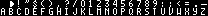

Drawing Text
On each game state in Galactic Armada, you’ll see dynamically drawn text. The Game Boy doesn’t support “fonts”, in the traditional sense. To draw text, you first populate VRAM with tiles that have letters/numbers/puncation on them. Secondly, you render those tiles in a sequence on the window or background tilemap.
You can see those text tiles in the text font asset included in the starter:

Note: A function is included with the starter called
LoadTextFontIntoVRAM. This function loads the tiles for the text font into VRAM.
Mapping Characters to bytes
Everything with Game Boy game development uses bytes. There’s no concept of “characters”, “letters”, or “strings”. RGBDS allows you to use string when defining data.
wScoreText:: db "score", 255
The compiler will convert these strings to their byte equivalents. To do this, we need a character mapping. The starter comes with a basic character mapping:
; The character map for the text-font
CHARMAP " ", 0
CHARMAP ".", 24
CHARMAP "-", 25
CHARMAP "a", 26
CHARMAP "b", 27
CHARMAP "c", 28
CHARMAP "d", 29
CHARMAP "e", 30
CHARMAP "f", 31
CHARMAP "g", 32
CHARMAP "h", 33
CHARMAP "i", 34
CHARMAP "j", 35
CHARMAP "k", 36
CHARMAP "l", 37
CHARMAP "m", 38
CHARMAP "n", 39
CHARMAP "o", 40
CHARMAP "p", 41
CHARMAP "q", 42
CHARMAP "r", 43
CHARMAP "s", 44
CHARMAP "t", 45
CHARMAP "u", 46
CHARMAP "v", 47
CHARMAP "w", 48
CHARMAP "x", 49
CHARMAP "y", 50
CHARMAP "z", 51
The above character mapping will convert (during the compile process) the previous wScoreText data to: “44, 28 ,40 ,43 , 30, 255”. As per the character mapping:
- The
sconverts to 44 - The
cconverts to 28 - The
oconverts to 40 - The
rconverts to 43 - The
econverts to 30
Note: These values come from the text font. ‘s’ is the 44th tile, ‘c’ is the 28th tile, and so on…
The final 255 byte will be used by our text drawing function: DrawTextInHL_AtDE. It will let that function know we’ve reached the end.
Drawing Basic Text
Our DrawTextInHL_AtDE function from the starter will write to the address defined in “de” the value in “hl”. Then increasing both address, and looping again. This is done until we reach the “end-of-string” byte (255). You can find this function in the “src/main/utils/text-utils.asm” file:
DrawTextInHL_AtDE::
; Check for the end of string character 255
ld a, [hl]
cp 255
ret z
; Write the current character (in hl) to the address
; on the tilemap (in de)
ld a, [hl]
ld [de], a
inc hl
inc de
; move to the next character and next background tile
jp DrawTextInHL_AtDE
Animating Text with a Typewriter effect
To achieve a typewriter effect, we just need to wait between drawing each letters. It’s would be identical to DrawTextInHL_AtDE, in terms of concepts. The difference would be that this function would wait for 3 vblank phases to pass, before drawing the next letter.
TypewriteTextInHL_AtDE::
;;;;;;;;;;;;;;;;;;;;;;;;;;;;;;;;;;;;;;;;;;;;;;;;;;;;;;;;;;;;;;;;;;;;;;;;;;;;;;;;;
; Wait a small amount of time
; Save our count in this variable
ld a, 3
ld [wVBlankCount], a
; Call our function that performs the code
call WaitForVBlankFunction
;;;;;;;;;;;;;;;;;;;;;;;;;;;;;;;;;;;;;;;;;;;;;;;;;;;;;;;;;;;;;;;;;;;;;;;;;;;;;;;;;
; Check for the end of string character 255
ld a, [hl]
cp 255
ret z
; Write the current character (in hl) to the address
; on the tilemap (in de)
ld a, [hl]
ld [de], a
; move to the next character and next background tile
inc hl
inc de
jp TypewriteTextInHL_AtDE
The starer takes this to the next level by adding a function for writing multiline text. This is used during the story game state.

Animating Multiline Text with a typewriter effect
The starter extends on the previous function to define MultilineTypewriteTextInHL_AtDE. This function simply uses TypewriteTextInHL_AtDE, adding 64 bytes to “de” (Where the text is drawn), until
When the TypewriteTextInHL_AtDE function reaches the end of string character, a 255 byte; it will
MultilineTypewriteTextInHL_AtDE::
; Save where we are writing to, the "current line"
push de
MultilineTypewriteTextInHL_AtDE_NewLine:
call TypewriteTextInHL_AtDE
; hl should point to a 255 after `TypewriteTextInHL_AtDE`
; move past that 255
inc hl
; Restore the "current line"
pop de
; Check for the end of string character 255
; consecutive 255's mean were all done
ld a, [hl]
cp 255
ret z
; Skip a line
ld a, 64
add a, e
ld e, a
; Save where we are writing to, the "current line"
push de
; continue until we read those consecutive 255's
jp MultilineTypewriteTextInHL_AtDE_NewLine
In a later part of this tutorial, we will use that function with this data:
Story:
.Line1 db "the galatic empire", 255
.Line2 db "rules the galaxy", 255
.Line3 db "with an iron", 255
.Line4 db "fist.", 255, 255
Story2:
.Line1 db "the rebel force", 255
.Line2 db "remain hopeful of", 255
.Line3 db "freedoms light", 255, 255
Calling that function like so:
UpdateStoryState::
; Call Our function that typewrites text onto background/window tiles
ld de, $9821
ld hl, Story.Line1
call MultilineTypewriteTextInHL_AtDE
Drawing Numbers
For drawing numbers, we’ve created a function called DrawBDigitsHL_OnDE. To call this function, we need to specifiy:
- how many digits we want to draw in the
bregister - a pointer to the digits in
hl - the address on the window/background where we want to draw them in
de
Note: The numbers in our text font start at tile 10. So, for each number read, we’ll add 10 to it.
DrawBDigitsHL_OnDE::
; How many digits remain in b
ld a, b
and a
ret z
; Decrease b by one
dec a
ld b,a
ld a, [hl]
add a, 10 ; our numeric tiles start at tile 10, so add to 10 to each bytes value
ld [de], a
; Increase which tile we are drawing to
inc de
; Increase the tile we are drawing
inc hl
jp DrawBDigitsHL_OnDE
We will later call that function like so:
Note: In this example, our
wScorevariable has 6 bytes. Each byte represents one digit.
ld hl, wScore
ld de, $9C06 ; The window tilemap starts at $9C00
ld b, 6
call DrawBDigitsHL_OnDE